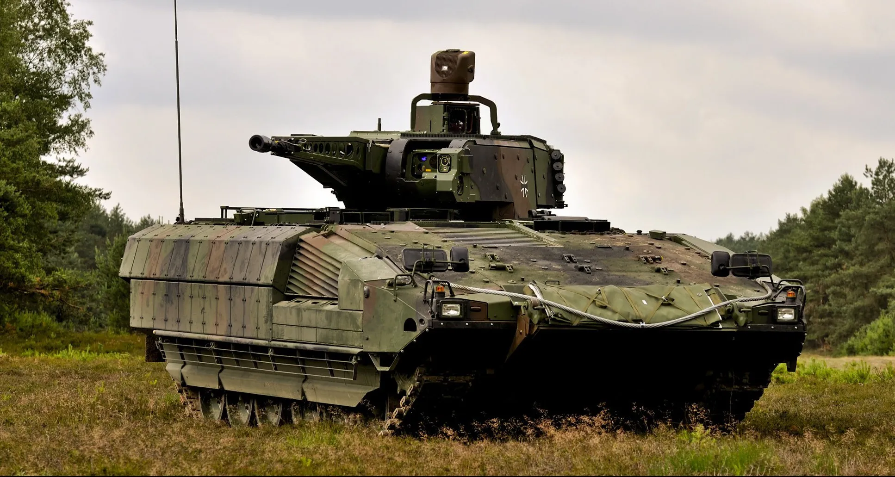
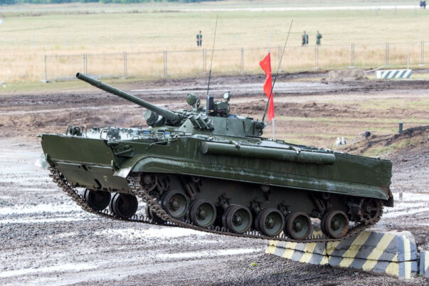

PROFILE
Al-Said is a defense company specializing in advanced military equipment, renowned for its cutting-edge technology and unwavering commitment to quality. What sets Al-Said apart is its ability to deliver products that are not only durable and reliable in the field but also designed with operational efficiency and state-of-the-art security systems that meet international standards. With a highly skilled research and development team, the company consistently provides tailored solutions to meet client needs, ranging from modern system integration to responsive after-sales support. This combination of product reliability, service flexibility, and global reputation makes Al-Said a trusted strategic partner for strengthening national defense and security institutions.
AL‑SAID was born in Southeast Asia during a time of rapid industrial and geopolitical change. The company began with a clear vision: to become a trusted partner in the trade of heavy defense equipment, specializing in armored vehicles and tanks. From the very beginning, AL‑SAID positioned itself not just as a supplier, but as a company that understood the complex needs of governments, defense ministries, and international organizations. The foundation of AL‑SAID was built on three principles: reliability, transparency, and innovation. These values guided the company through its earliest contracts and remain central to its operations today.
In its first years , AL‑SAID faced the challenge of entering a highly regulated and competitive industry. Obtaining licenses, building trust with clients, and proving operational capacity required persistence. The company’s breakthrough came when it successfully delivered a fleet of armored vehicles to a regional defense client. This achievement established AL‑SAID’s reputation for professionalism and reliability, opening doors to international markets. From that point forward, AL‑SAID expanded steadily, building partnerships across Asia, the Middle East, and eventually Europe and Africa. Its ability to adapt to diverse client requirements became a hallmark of the brand.
No journey is without obstacles. In the mid‑2000s, AL‑SAID encountered a serious complication when international sanctions disrupted supply chains and delayed shipments. Contracts were put on hold, and questions arose about the company’s future. Rather than retreat, AL‑SAID responded with resilience. The company diversified its services, offering maintenance, training, and logistical support—areas unaffected by restrictions. It also implemented strict compliance measures, inviting independent auditors to review its operations. This transparency reassured clients and restored confidence. The crisis became a turning point. AL‑SAID emerged stronger, with a broader portfolio and a reputation for integrity under pressure.
Today, AL‑SAID operates from Southeast Asia but serves a truly global clientele. Its clients include governments, defense contractors, and international organizations seeking reliable access to heavy defense equipment. The company’s reach extends across continents, supported by a network of logistics partners and technical experts. AL‑SAID’s facilities include modern warehouses, testing grounds, and training centers. These resources allow the company not only to deliver equipment but also to ensure that clients receive full operational support.
AL‑SAID continues to evolve with the defense industry. While armored vehicles and tanks remain its core business, the company is exploring new technologies such as advanced mobility systems and integrated defense solutions. Its long‑term vision is to remain at the forefront of innovation while maintaining the trust and reliability that clients have come to expect. The company’s philosophy is simple: to provide clients with dependable solutions that strengthen security and defense capabilities worldwide.
The story of AL‑SAID is one of ambition, challenge, and resilience. From its modest beginnings in Southeast Asia to its current role as an international supplier, the company has proven that dedication and integrity can overcome even the most complex obstacles. For clients, AL‑SAID offers more than equipment—it offers partnership, expertise, and a commitment to excellence.
Al-Said offers a range of modern combat machines such as tanks, Infantry Fighting Vehicles (IFVs), and armored vehicles, all designed with advanced technology. These products emphasize durability, high mobility, and precision weapon systems, ensuring effective performance across diverse battlefield conditions. With strong armor protection and integrated modern systems, Al-Said delivers ground defense solutions that are robust, adaptable, and reliable, making them highly attractive to international clients.
and here are some examples and explanations of land armored products:hys
.
Main Battle Tank (MBT)A Main Battle Tank (MBT) is the core of modern armored forces, designed to combine heavy firepower, strong armor protection, and high mobility into a single platform capable of dominating the battlefield; equipped with a large-caliber cannon (usually 120–125 mm) supported by machine guns, MBTs can engage enemy tanks, fortifications, and infantry while their composite and reactive armor, often enhanced with active protection systems, shields them from anti-tank weapons; despite weighing between 40–70 tons, powerful engines and advanced suspension systems allow MBTs to maneuver effectively across diverse terrains, making them versatile in both offensive and defensive operations; first emerging in the Cold War era to replace the distinction between light, medium, and heavy tanks, MBTs have since evolved into advanced systems like the American M1 Abrams, German Leopard 2, Russian T-90M, and British Challenger 2, all integrating digital fire-control systems, thermal imaging, and battlefield networking; today, MBTs remain indispensable in combined arms warfare, working alongside infantry fighting vehicles, artillery, and air support, though they face growing challenges from drones, precision-guided missiles, and urban combat environments, requiring continuous upgrades to remain effective.
this is an example of our product, namely the Main Battle Tank:hys
.
Infantry Fighting Vehicle (IFV)An Infantry Fighting Vehicle (IFV) is a type of armored combat vehicle designed to transport infantry safely across the battlefield while also providing significant firepower to support them in combat; unlike Armored Personnel Carriers (APCs), which mainly serve as transport, IFVs are equipped with heavier weapons such as autocannons (20–40 mm), machine guns, and often anti-tank guided missiles, allowing them to fight alongside tanks and mechanized units; they typically carry a squad of 6–10 soldiers plus a crew of three (driver, gunner, commander), and feature armor that protects against small arms fire and artillery fragments while maintaining mobility across rough terrain; first developed in the Cold War era with models like the Soviet BMP-1 and German Marder, IFVs have since evolved into advanced platforms such as the American M2 Bradley, German Puma, and Russian BMP-3, integrating modern electronics, modular armor, and battlefield networking systems; their importance lies in enabling mechanized infantry to keep pace with tanks, bridging the gap between heavy armor and troop carriers, though they remain vulnerable to powerful anti-tank weapons, mines, and drones, making them both indispensable and high-risk assets in modern warfare.
this is an example of our product, namely the Infantry Fighting Vehicle :


hys
.
Armored Personnel Carrier (APC)An Armored Personnel Carrier (APC) is a military vehicle specifically designed to transport infantry safely across hostile environments, combining mobility, protection, and versatility; it is typically equipped with armor that shields troops from small arms fire, shrapnel, and improvised explosive devices, while maintaining speed and maneuverability on roads and rugged terrain. Unlike tanks, APCs are not built for heavy frontline combat but rather for troop movement and support, usually armed with light weapons such as machine guns or grenade launchers to provide defensive firepower. Modern APCs often feature advanced communication systems, modular designs that allow them to serve multiple roles—such as medical evacuation, command and control, or reconnaissance—and mine-resistant hulls to enhance survivability. They can be wheeled (4x4, 6x6, or 8x8) or tracked, depending on mission requirements, and are widely used in both conventional warfare and peacekeeping missions, making them a critical asset for modern armies by ensuring soldiers arrive at the battlefield protected and ready to fight.
this is an example of our product, namely the Armored Personnel Carrier:HYS
.
.
HYS
"STRENGTH IN DEFENSE, PEACE IN PURPOSE"HYS
AND THANKYOU